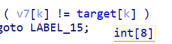
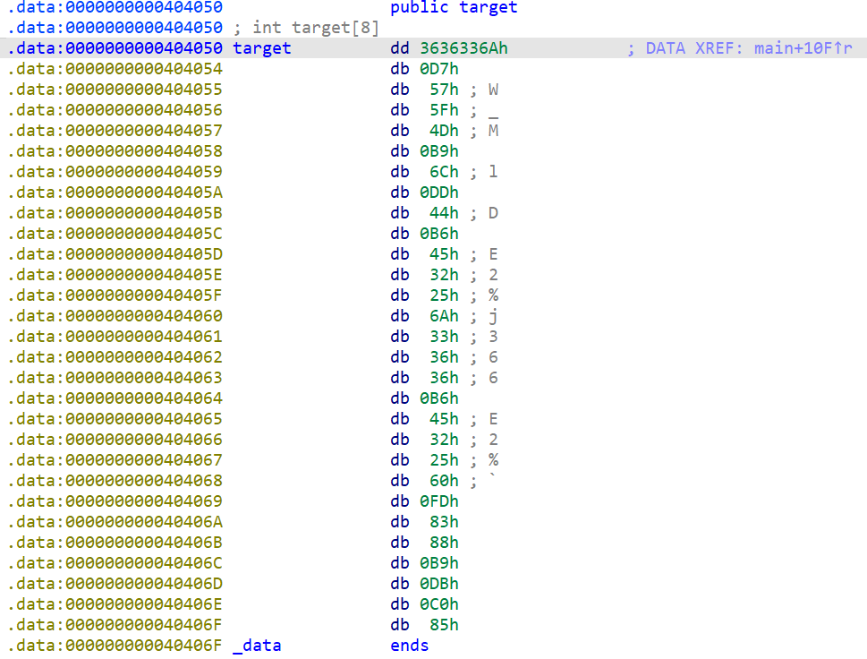
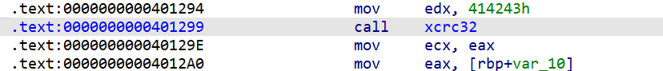
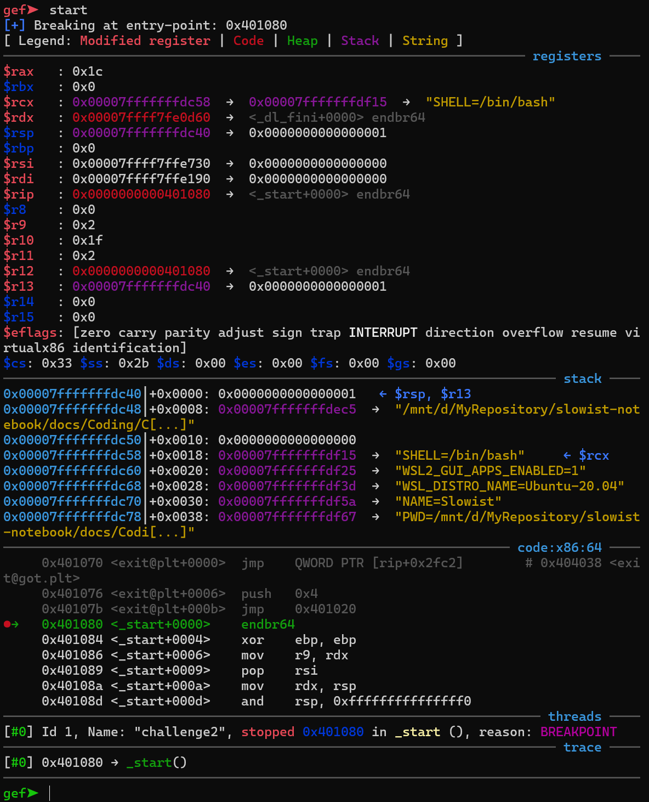
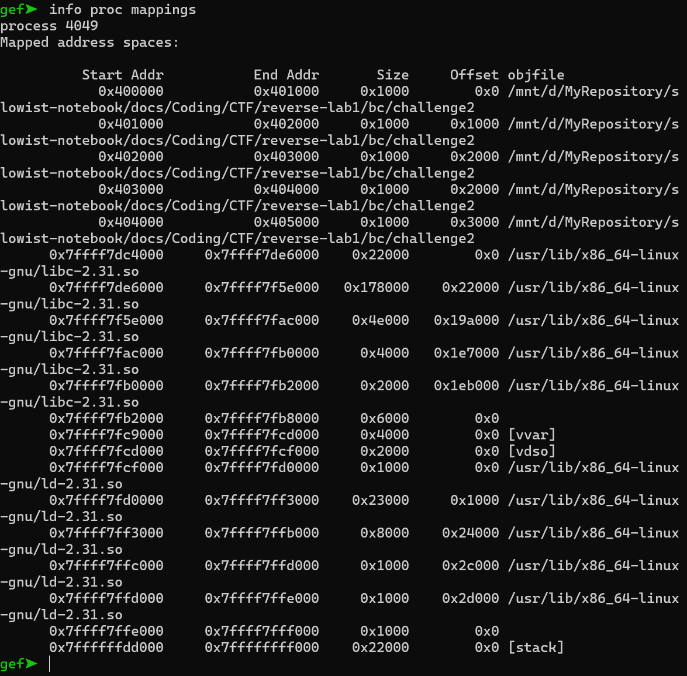
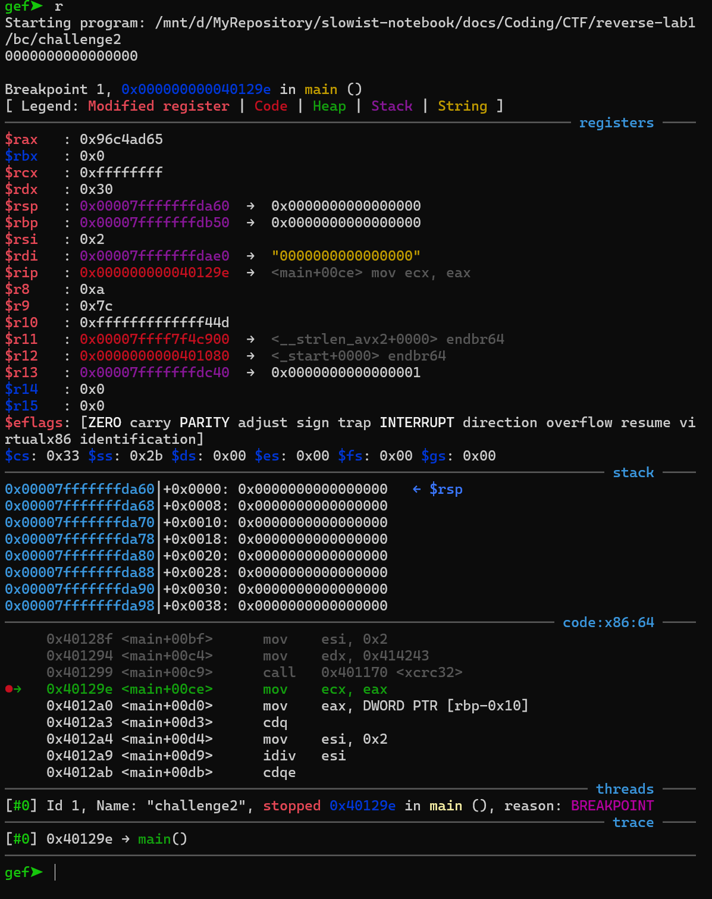

1 Task1
全都是gcc, 返回效果：
Bash -S hello.c -o hellogcc.s
hellogcc.s -o hellogcc.o
hellogcc.o
ELF 64 -bit LSB relocatable, x86-64, version 1 ( SYSV) , not stripped
全都是clang, 返回效果：
Bash -S hello.c -o helloclang.s
-filetype= obj helloclang.s -o helloclang.o
helloclang.o
ELF 64 -bit LSB relocatable, x86-64, version 1 ( SYSV) , not stripped
先用gcc,后用clang
Bash -filetype= obj hellogcc.s -o hellogccclang.o
hellogccclang.o
ELF 64 -bit LSB relocatable, x86-64, version 1 ( SYSV) , not stripped
尝试执行的时候出现了错误：
Text Only
用clang后再用gcc
Bash helloclang.s -o helloclanggcc.o
Assembler messages:
Error: unknown pseudo-op: ` .addrsig'
helloclang.s:41: Error: unknown pseudo-op: `.addrsig_sym'
因此，两种编译器之间无法混用。
2 Task2
首先，将challenge1拖进IDA反编译，
C int __fastcall main ( int argc , const char ** argv , const char ** envp )
{
wh4t_the_h3ll_i5_th1s ();
puts ( "Where is the flag?" );
return 0 ;
}
C __int64 wh4t_the_h3ll_i5_th1s ()
{
return ooooooo ( fl4g );
}
ooooooo函数:
C __int64 __fastcall ooooooo ( _BYTE * a1 )
{
* a1 = 65 ;
return ooooooO ( a1 + 1 );
}
C _BYTE * __fastcall ooOoOoO ( _BYTE * a1 )
{
_BYTE * result ; // rax
result = a1 ;
* a1 = 0 ;
return result ;
}
*a1对应的数字的字符，然后地址+165 65 65 123 104 111 112 101 95 117 95 104 97 118 101 95 102 117 110 126 125AAA{hope_u_have_fun~}flag
3 Task3
首先，先利用llc和clang,将bc文件变成可执行文件
Bash challenge2.bc.old -o challenge2.s
challenge2.s -o challenge2
并且拖入IDA进行反汇编主程序如下：
C int __fastcall main ( int argc , const char ** argv , const char ** envp )
{
size_t v3 ; // rbx
size_t v4 ; // rbx
int v5 ; // eax
int v7 [ 32 ]; // [rsp+0h] [rbp-F0h] BYREF
char user_input [ 72 ]; // [rsp+80h] [rbp-70h] BYREF
const char ** v9 ; // [rsp+C8h] [rbp-28h]
int v10 ; // [rsp+D4h] [rbp-1Ch]
int v11 ; // [rsp+D8h] [rbp-18h]
int i ; // [rsp+DCh] [rbp-14h]
int j ; // [rsp+E0h] [rbp-10h]
int k ; // [rsp+E4h] [rbp-Ch]
v10 = 0 ;
v11 = argc ;
v9 = argv ;
memset ( user_input , 0 , 0x40uLL );
memset ( v7 , 0 , sizeof ( v7 ));
__isoc99_scanf ( & unk_402410 , user_input );
for ( i = 0 ; ; ++ i )
{
v3 = i ;
if ( v3 >= strlen ( user_input ) )
break ;
if ( user_input [ i ] < 48 || user_input [ i ] > 57 )
{
LABEL_15 :
printf ( "try again \n " );
exit ( 0 );
}
}
for ( j = 0 ; ; j += 2 )
{
v4 = j ;
if ( v4 >= strlen ( user_input ) )
break ;
v5 = xcrc32 ( & user_input [ j ], 2L L , 4276803L L );
v7 [ j / 2 ] = v5 ;
}
for ( k = 0 ; ( unsigned __int64 ) k < 8 ; ++ k )
{
if ( v7 [ k ] != target [ k ] )
goto LABEL_15 ;
}
printf ( "awesome \n " );
return 0 ;
}
阅读main函数，大概了解到程序：
- 仅限数字输入
- 一次取两位数字计算crc值，并且和target数组中储存的值进行比较
观察到target是长度为8的数组，那么自然我们需要输入十六位密码咯x


我们观察到主程序中主要进行计算的是xcrc32函数，观察其地址：

发现函数是...01299开始 ...0129E结束
因此我们使用gdb调试这段程序：

用info proc mappings查看进程信息：

可以发现，程序是从0x400000开始加载的python计算实际地址：
Bash python print( hex( 0x400000+0x129e))
为了查看运行之后的结果，我们在上面设置断点：
Bash b *0x40129e
1 at 0x555555400b6e
下面我们从0开始，构造16位输入：
Bash python print( '0' *16)
0000000000000000

由断点位置，知道eax存放了位置
Bash p $eax
$1 = 0x96c4ad65
到这里我卡住了 可能是源码没读通 感觉实在没什么思路。我的问题一直卡在crc32给我返回的值是32bit、8位十六进制，而target中全部都是二位十六进制，我感觉即使我从00试到99也不可能试出一个值来。00试到99, 要试100个值，真的要手动输入/比对吗？于是在我看懂的意思里面，我尝试写了一个和这个功能类似的程序，用遍历去构造一下输入，然后就有了下面：
Python import binascii
crc32_table = [
# omitted. it's too long!
]
def xcrc32 ( data , initial_crc ):
crc = initial_crc
for byte in data :
table_index = ( byte ^ ( crc >> 24 )) & 0xFF
crc = crc32_table [ table_index ] ^ ( crc << 8 )
crc &= 0xFF
return crc
def find_two_byte_combinations ( target ):
combinations = []
for t in target :
found = False
for i in range ( 0 , 10 ):
for j in range ( 0 , 10 ):
candidate = ( i << 8 ) | j
if binascii . crc32 ( candidate . to_bytes ( 2 , 'big' )) & 0xFFFFFFFF == t :
combinations . append ( candidate )
found = True
break
if found :
break
return combinations
target = [
0xD7 , 0x57 , 0x5F , 0x4D , 0x89 , 0x6C , 0xDD , 0x44 , 0x86 , 0x45 , 0x32 , 0x25 ,
0x6A , 0x33 , 0x36 , 0x36 , 0x86 , 0x45 , 0x32 , 0x25 , 0x60 , 0xFD , 0x83 , 0x88 ,
0x89 , 0xDB , 0x85
]
combinations = find_two_byte_combinations ( target )
for idx , comb in enumerate ( combinations ):
print ( f "Target[ { idx } ]: { target [ idx ] : 04X } corresponds to { comb : 04X } " )
但从最终结果来看，也没有对应的数字，说明我对这个程序还是有一定误解x
我还尝试了一下暴力遍历，毕竟一共16位数字，暴力也许可以遍历出来的，于是：
Python import subprocess
from multiprocessing import Pool , Manager
def run_elf_program ( inputs ):
results = []
for input_value in inputs :
input_string = str ( input_value )
process = subprocess . Popen ([ '/mnt/d/MyRepository/slowist-notebook/docs/Coding/CTF/reverse-lab1/bc/challenge2' ], stdin = subprocess . PIPE , stdout = subprocess . PIPE , text = True )
stdout , _ = process . communicate ( input = input_string )
if "awesome" in stdout . lower ():
results . append ( input_value )
return results
def main ():
manager = Manager ()
found = manager . Value ( 'i' , 0 )
def batch_run ( batch ):
if found . value :
return []
results = run_elf_program ( batch )
if results :
found . value = 1 # 设置标志
return results
batch_size = 1000
input_values = range ( 10000000000000000 )
batches = [ input_values [ i : i + batch_size ] for i in range ( 0 , len ( input_values ), batch_size )]
with Pool ( processes = 20 ) as pool :
for result_batch in pool . imap_unordered ( batch_run , batches ):
if result_batch :
print ( f "找到结果为 'awesome' 的输入值： { result_batch [ 0 ] } " )
pool . terminate ()
break
else :
print ( "未找到符合条件的输入值。" )
if __name__ == "__main__" :
main ()
如果我能想出来的话，我觉得大致思路应该是根据target进行反查表，然后推出对应的数字组合，最后输16位数字，然后得出awesome